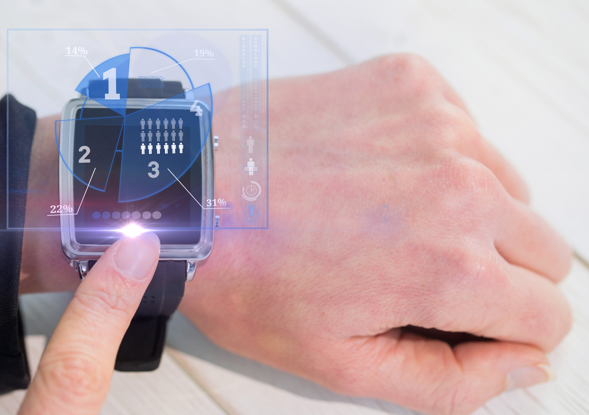

Binishaan Basnet on 1/12/2025
Artificial Intelligence (AI) is playing a crucial role in transforming the watch industry alongside revolutionizing watch customization and sales strategies. The watch industry has long been associated with precision, craftsmanship, and exclusivity. However, in the face of rapid technological advancement, the industry is embracing a new transformation, driven by Artificial Intelligence (AI). From manufacturing to marketing and customer engagement, AI is reshaping the landscape of watchmaking.
AI Personalization has allowed brands to enable more personalization features to their offered smartwatches. By gathering consumer data AI is able to create in-depth profiles of their users, understanding individual preferences, habits, sleep cycle and even emotional responses to different styles of watches. This advanced personalization not only improves customer satisfaction but also boosts brand loyalty as consumers are more likely to engage with brands that offer products that reflect their tastes.
Every masterpiece requires care. AI, by interpreting data from sensors embedded within the watch, such as its internal movements and external temperature changes, offers insights into its health. By catching early signs of wear and tear or potential malfunctions, AI ensures the longevity of the watch, advising timely maintenance interventions. Watchmakers can be more agile in responding to market shifts and consumer desires, giving them a competitive edge in an industry that thrives on innovation and exclusivity.
As AI continues to evolve, it is clear that its role in the luxury watch industry will only grow. From personalized shopping experiences and predictive trend forecasting to enhanced customer service, AI is enabling brands to deliver more meaningful and tailored interactions with consumers.